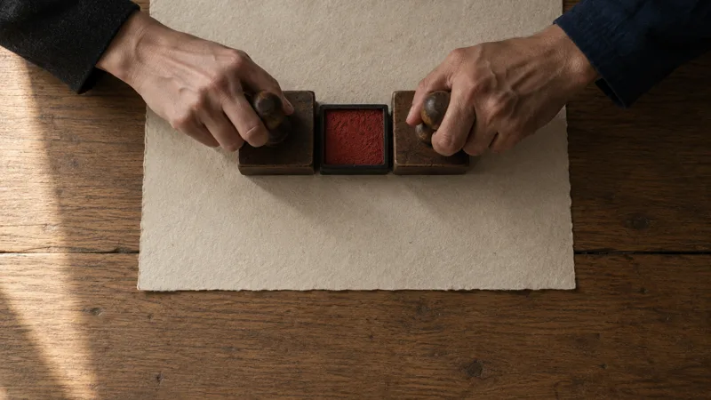
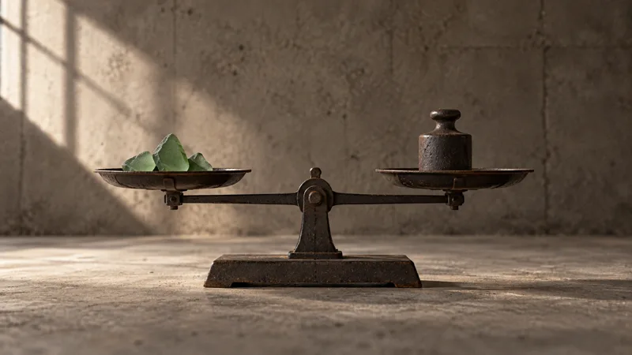
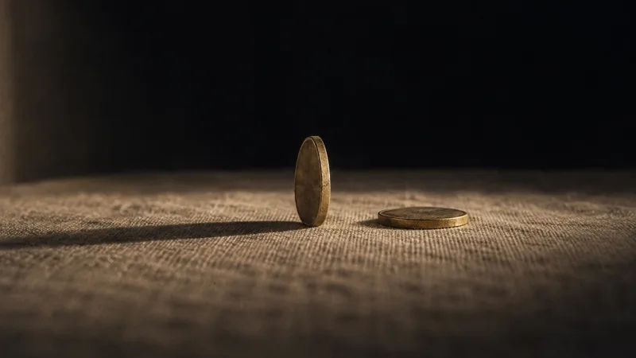
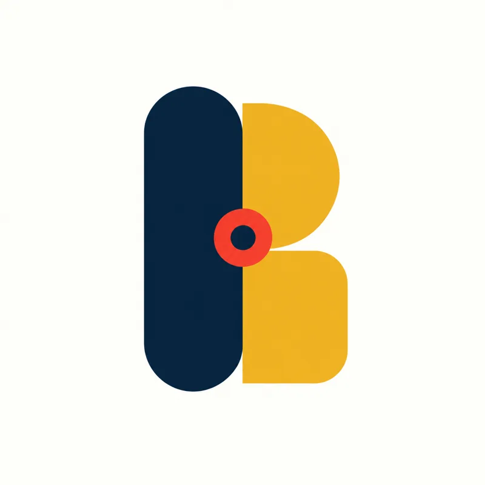

the wallet: coins that clink
Klimper
A small, playful wallet for the phone: coins that clink, and you pay with a clap.
Testingno website yet


Apps for paying, trading and working together, directly, with no middlemen.


One design language for all of it, open to anyone.




A work made from both sides.
Four red signs form one mark: each band member's sign is part of the B.
One mark, four cornerstones
12 apps built on one principle: two parties agree, and both confirm it.
Read →Seven principles, four red signs and two modes: the stage and the receipt.
Read →Our fonts, colours and components are open. Use them to build in the Beidwerk style.
Read →Four musicians from four decades. The album, the music videos and the world of Neu-Wien.
Read →One principle: both sides confirm
the wallet: coins that clink
A small, playful wallet for the phone: coins that clink, and you pay with a clap.
Testingno website yet
payments that forget, like cash
Money that is fun to give, easy to share and simple to spend.
Buildingclapandpay.com · not live yet
money as a link in the group chat
Money as a link in the group chat: tap, open it with your face or fingerprint, and it is yours. No app, no account.
Buildingenvelope.clapandpay.com · not live yet
credit against confirmed invoices
Trade and manage offers in your browser, or inside your wallet.
Livepengui.space ↗
work and deliveries, confirmed by both
A client confirms a finished project, a buyer a delivery: freelancers prove their income without a payslip.
Planno website yet
public chain data for everyone
Public chain data for everyone: a fast, open gateway to the chain, with an index beside it.
Testingnodexch.space ↗
the waiting room of the chain
The waiting room of the chain: the next blocks, the fees, and a search box that understands anything you paste.
materials: a kilo weighed and paid
Materials: kilos weighed, paid and confirmed where they are collected.
Ideano website yet
the open register nobody can edit
The open register no one can change or close: it keeps only the fingerprints of what both sides confirmed.
Planfreiregister.com · not live yet
identity: your own key
Your own key: sign in with your face or fingerprint instead of a password, an identity you hold yourself.
To confirmno website yet
the bridge between systems
The bridge between wallets and apps: approve on your phone, privately, with a push.
Testingno website yet
the school of thought: Zum Wohl
The school of thought behind it all: tools whose form follows the bond between two people.
Planwohlwirtschaft.com · not live yet
Seven principles · four signs · the stage and the receipt
Everything we make has two sides that meet: two people, two hands, the old and the new.
Every movement follows four steps: two things approach, they touch, they leave a trace, they come to rest.
Red appears once per screen or picture, on the one thing that matters most, and only on a small part of it.
The look is open
The fonts, colours and components of Beidwerk are free to use. Link one stylesheet, keep your own content, and your site or app becomes part of the same world, with an accent colour of its own.
Where the four signs come from
voice · 2050
Siebzehn Prozent echt. Die richtigen siebzehn.
guitar · 1999
I unterschreib nix, was i ned g'lesen hab.
double bass · 1910
Was bleibt, wenn wir gehen?
drums · 1968
Ich hab die Welt schon fünfmal untergehen sehen.
ECHT, STAMM, BOGEN and SCHLAG play the songs of the debut album and tell the story of Neu-Wien. Each of them has one red sign, and together the four signs form the Beidwerk mark.